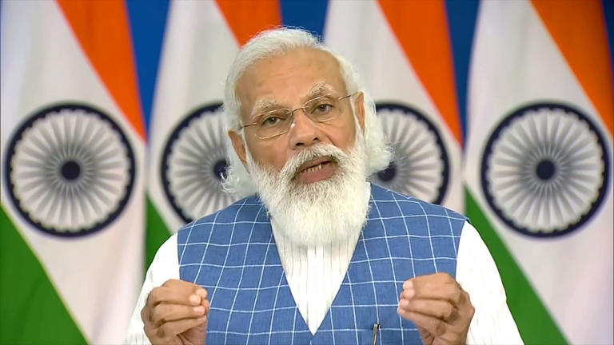

Todays News
Prime Minister Narendra Modi launched the 100% Electrification of the Konkan Railway route via video conference
Monday at Bengaluru, Karnataka under the ‘Mission 100% Electrification - Moving towards net Zero Carbon
Emission’ and flagged off Electric loco trains from Ratnagiri, Madgaon and Udupi. The total cost of the
electrification of a total 740 km route of Konkan railway is Rs 1287 crore.

Railway Electrification of Konkan Railway has been completed in 5 phases i.e Thokur-Bijoor, Bijoor-Karwar,
Karwar-Thivim, Thivim-Ratnagiri and Ratnagiri-Roha, the last section being Ratnagiri - Thivim which was
commissioned on March 28th 2022. All loco pilots have been trained in a phased manner for running electric
traction loco.
Now, Konkan Railway is 100% electrified. This will lead to higher operational efficiency and lower unit cost of
transportation, thus benefiting the country as well as the Corporation.
It is worthwhile to note the numerous inherent benefits of electric traction i.e. Significant savings in fuel
expenditure i.e more than Rs 150 Cr. per annum, Seamless operation on Electric Traction, pollution-free mode of
transportation and Reduced dependence on HSD oil. Pollution-free travel for the passengers especially when the
train passes through the tunnels. Electrification of the KRCL route will also improve the average speed and
throughput of the section and will help in line capacity augmentation/utilization.
It is worthwhile to note the numerous inherent benefits of electric traction i.e. Significant savings in fuel
expenditure i.e more than Rs 150 Cr. per annum, Seamless operation on Electric Traction, pollution-free mode of
transportation and Reduced dependence on HSD oil. Pollution-free travel for the passengers especially when the
train passes through the tunnels. Electrification of the KRCL route will also improve the average speed and
throughput of the section and will help in line capacity augmentation/utilization.
Now, Konkan Railway is 100% electrified. This will lead to higher operational efficiency and lower unit cost of
transportation, thus benefiting the country as well as the Corporation.
It is worthwhile to note the numerous inherent benefits of electric traction i.e. Significant savings in fuel
expenditure i.e more than Rs 150 Cr. per annum, Seamless operation on Electric Traction, pollution-free mode of
transportation and Reduced dependence on HSD oil. Pollution-free travel for the passengers especially when the
train passes through the tunnels. Electrification of the KRCL route will also improve the average speed and
throughput of the section and will help in line capacity augmentation/utilization.